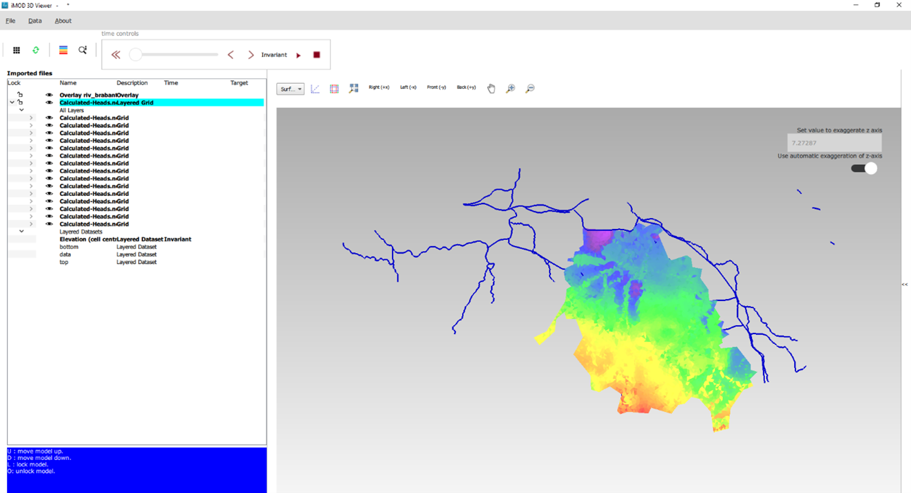
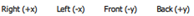
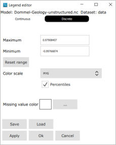

Dommel
Description
In this tutorial, you will learn the following:
- Basic usage of the iMOD 3D Viewer
- View a shapefile in the 3D viewer
- View a grid with timeseries in the 3D viewer
Objective
In this tutoral we will explore the iMOD 3D Viewer, based on data of the Dommel, a catchment in south of the Netherlands. This viewer is developed because QGIS does not support 3D viewing. It can display your geological data (layers and borehole data) but also data variation through time like chloride concentrations.
There are 2 options to start the 3D Viewer. One option is to select layers in QGIS and select the 3D Viewer icon on the iMOD toolbar . The selected layers are opened in the 3D Viewer. The other option is to start the 3D Viewer directly. In this short Tutorial we’ll pursue the second option.
Tutorial
- Launch the iMOD 3D Viewer from your START menu or your desktop. Search for “imod6.exe”.
- Maximize the program window for a better view.
We display some data from Brabant, a province in The Netherlands. (In case you missed the download instructions for the Tutorial data, visit the start page iMOD Suite Tutorial).
Let’s first import an overlay file showing the surface water elements.
- In the main menu choose “Data”, select “Open overlay” and open the shape file “…\data\1-external\Brabant-data\riv_brabant.shp”.
- Select the new layer in the overview and click the “draw-selected-layer” button ().
Now we’ll open a dataset containing Heads calculated with a MODFLOW model. This NetCDF file contains for each model layer the top, the bottom and a timeseries of calculated heads.
- In the main menu choose “Data”, select “Open grid file” and open the shape file “..\data\1-external\Brabant-data\Calculated-Heads.nc”.
- Select both layers in the overview and click the “draw-selected-layer” button ().
- Click on the “>” sign left from the layer “Calculated-Heads“ and you’ll see a subset with “All Layer” and “Layered Datasets”.
- Click on the “>” sign left from both the section “All Layer” and “Layered Datasets”.
Your screen might look like Figure 1

Let’s now experience with the viewer controls.
- Spin the mouse wheel forward to zoom in and spin backwards to zoom out. On a laptop, move two fingers up and down on the touchpad.
- In case you lost control on your display view, click in the toolbar Viewer Controls on the “zoom-to-extent” button () to return to the initial view.
- Combine the Shift button + right mouse and move the camera horizontally/vertically with each mouse move (or finger on your touch pad).
- Combine the Ctrl button + right mouse and rotate the camera around its lens with a mouse move (or finger on your touch pad).
- Go back to the initial view with the “zoom-to-extent” button ().
- Hold the right mouse button while moving the mouse and the camera moves around the grid.
The imported data is a nice example of an unstructured grid.
- Zoom in to the upper left part of the grid. Notice that the grid is built from triangles, concentrated around the rivers.
- Switch the dataset on and off with a click on the () button in file overview, left of the layer. See the underlaying rivers.
In your display the vertical thickness of the dataset is perhaps rather small. Let’s increase the vertical exaggeration.
- In the upper right corner, switch off the “automatic exaggeration of the z-axis”.
- Now increase the value to 50.0 and the view will change automatically.
Some final experience with the other viewer controls.
- Use the buttons () to reposition your camera to another fixed position to the grid.
- Click the button “Toggle Sliders”() to activate the sliders for the X, Y and Z direction.
- Experiment with the sliders, both left and right
The colors in the display by default referred to the Elevation of the layers. Let’s now color the layers by calculated Head.
- In the list of imported files select “Calculated-Heads”.
- From the subset “layered Datasets” double click on the element “data”.
Wait a few seconds and the name turns bold and the colors in the display change.
- Select the name “data” and click your right mouse button to open a pop-up window.
- Select “Edit legend” to open the “Legend editor” (see figure on the right).
- Select PIYG for Color scale.
- Check the Percentiles box.
- Click on OK and the window will close. The colors in your display change automatically.
The imported file doesn’t contain one single head, but a timeseries of calculated heads ranging from 01/01/2018 – 01/02/2018. Now let’s use the Time Slider to display the data through time.
- First click the button “Back(+y)” for a nice 3D view.
- Click the button (
 ) to start the animation. It is a large dataset to the view in the display only changes slowly.
) to start the animation. It is a large dataset to the view in the display only changes slowly. - Stop the animation with the button ().
- Play around with the slider.
That’s all for now. You can save your session if you like.
- From the main menu choose “File” and select “Save As…” to save the session as an *.imod file.
- Close the 3D viewer via menu “File” and select Quit”.
Thank you for your patience and attention.
